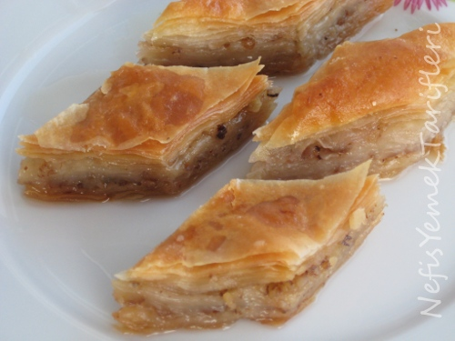

...BAKLAVA...
Bayramların vazgeçilmezi baklavadır. Yapımı ne kadar uğraştırsa da lezzetine değecektir. Şerbetli tatlıların taç takmış olanı baklava şekilleri farklı olsa da çoğu zaman tadı aynı güzellikte olmaktadır. Hamurlarınızı incecik açtığınızda daha da bir lezzetli olacak olan baklavanız herkesin beğenisini kazanacak. Baklavanızın eşsiz tadını tadarken iyi ki yapmışım diyeceksiniz. İçerisindeki ceviz ve antep fıstıklarıyla nefis bir lezzet alan baklavanızı misafirlerinize gönül rahatlığı ile ikram edebilirsiniz. Tarifimi denemeyi ve defterinize eklemeyi unutmayın. Deneyeceklere şimdiden afiyet olsun.
Tarif: Sevim Atalar

Kaç Kişilik: 14-16 kişilik
Hazırlık: 30 dakika
Pişirme Süresi: 45 dakika
BAKLAVA MALZEMELERİ
- 3 yumurta
- 1 su bardağı süt
- 1 su bardağı sıvı yağ
- 1 adet kabartma tozu
- 1 yemek kaşığı sirke
BAKLAVA NASIL YAPILIR ?
- Kolay ev baklavası hazırlamak için öncelikle yumurtayı, sütü, sıvı yağı, sirkeyi, kabartma tozunu ve tuzu yoğurma kabına boşaltın ve alabildiğince un ekleyerek yoğurunuz.
- Hazırladığınız hamuru 30 eşit parçaya bölünüz.
- Bu parçaları tek tek tabak büyüklüğünde açarak aralarına nişasta serpip 10’ar 10’ar üst üste koyun.
- 0’arlı olarak grupladığımız bu üç parçadan parçalardan her birini merdane yardımı ile tepsi büyüklüğüne getirin.
- Merdane ile açtığınız hamurların aralarına ceviz ya da fındık serperek üst üste yerleştirin.
- Dilediğiniz şekilde kesin ve üzerine her yerine eşit şekilde gelmesine dikkat ederek eritilmiş yağın yarısını dökün.
- Önceden ısıtılmış 180°C fırına sürün hafif rengi değiştiğinde fırından alarak kalan yağı gezdirin ve tekrar fırına sürün altı üstü kızarana kadar pişirin…
AFİYET OLSUN